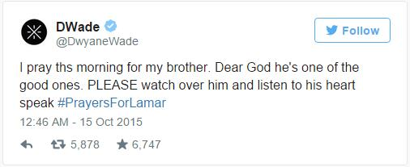

Lamar Odom, the former NBA star and reality TV personality embraced by teammates and fans alike for his humble approach to fame, was on life support Wednesday, his estranged wife Khloe Kardashian by his side. Odom had spent four days in a legal Nevada brothel, and authorities sought a warrant for blood evidence of drugs.
Hospital officials provided no immediate word on the condition of Odom, a 35-year-old former Los Angeles Laker and member-by-marriage of the Kardashian clan, who was found face down at Nevada’s Love Ranch Tuesday afternoon, according to brothel owner Dennis Hof.
But the Rev Jesse Jackson, who visited Odom at the hospital Wednesday, said doctors believe he is recovering after being totally unresponsive Tuesday.
“Apparently from what the doctor said, he was much better off today than yesterday. He at least has some responsiveness now,” Jackson said.
“He’s got tubes in him now but we felt inspired by his presence,” Jackson said. “We’re just holding hands and hoping he can bounce back.”
Dennis Hof, the owner of the Love Ranch, said Odom had been taking herbal Viagra and had drunk part of a bottle of cognac since arriving, but had no knowledge of his use of any other drugs.
“He just wanted to get away, have a good time and relax,” Hof told the Associated Press.
Sheriff Sharon Wehrly of Nye County, Nevada, said investigators sought a warrant to obtain a blood sample to determine if Odom suffered a drug or alcohol overdose.
Hof said Odom was “happy, he was sleeping every night” while visiting. Odom was also apparently in a “somber” mood Sunday, Hof said his workers told him. “Other than that, [he was in] good spirits, wanted to have a good time,” Hof said.
“It’s incredibly sad,” Hof said. When staff turned him on his side at the direction of a 911 operator, Hof said, Odom started “throwing up all kinds of stuff”.
Dwyane Wade, Charlie Villanueva and the Miami Heat were among those in the NBA to tweet their support for Odom.
Bryant and the Lakers were in Las Vegas to play the Sacramento Kings on Tuesday night in a pre-season NBA game, and Bryant left the MGM Arena early to visit his former team-mate. He exited without speaking to reporters.
Metta World Peace, who, along with Bryant, is Odom’s only former team-mate still on the Lakers’ roster, told reporters: “There’s not one word I could say that would make sense.” He declined to comment further.
Born Lamar Joseph Odom on 6 November 1979, in New York City, he was raised by his grandmother after his mother died of cancer when he was 12. His father was a drug addict. In 2006, Odom’s six-month-old son Jayden died from sudden infant death syndrome while sleeping in his crib in New York.
Odom has a daughter, Destiny, and a son Lamar Jr, from a previous relationship.
Odom spent the best years of his career with the Lakers, winning two championship rings and the NBA’s Sixth Man of the Year award in 2011. After seven years in purple and gold, he was crushed in December 2011 when the Lakers attempted to trade him to New Orleans in a multiplayer trade for Chris Paul. He eventually went to Dallas in another deal, but was out of the NBA just two years later.